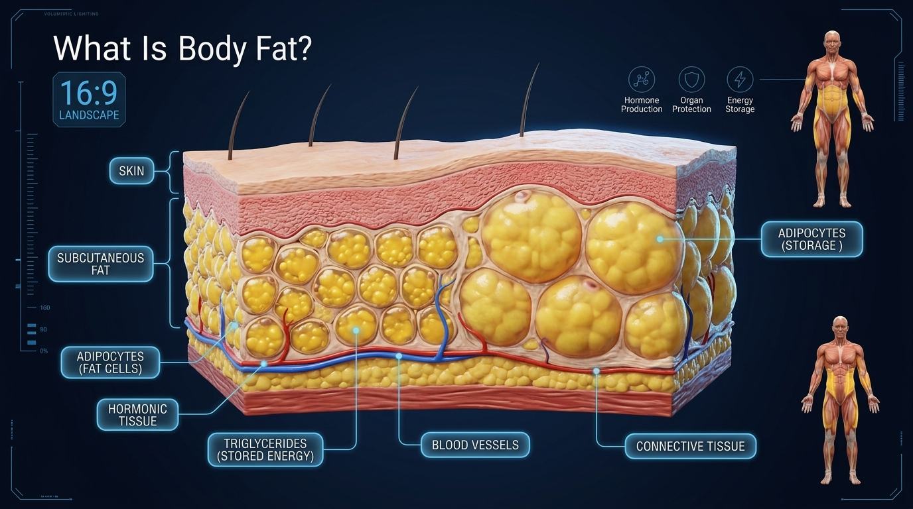

Contrary to popular belief, body fat is not the enemy. Your body depends on a certain amount of fat to survive. Every healthy person carries essential fat that supports normal physiological functions, while additional fat acts as stored energy that can be used whenever food intake is insufficient.
Body fat is stored inside specialized cells called adipocytes. These cells store excess energy in the form of triglycerides after you eat more calories than your body immediately needs. When energy demand increases—such as during exercise or a calorie deficit—these fat stores can be broken down and used as fuel.
Not all body fat is the same. Essential fat is necessary for normal hormone production, brain function, nerve protection, reproduction, and insulation. Storage fat, on the other hand, provides energy reserves and cushioning for internal organs. While some storage fat is healthy, excessive accumulation over time increases the risk of metabolic diseases such as obesity, type 2 diabetes, and cardiovascular disease.

Understanding Body Fat Storage
Think of body fat as your body's rechargeable energy bank. Whenever you consume more calories than your body immediately uses, the surplus energy is stored inside fat cells for future needs. Later, when calorie intake becomes lower than energy demand, those same fat cells release stored energy back into the bloodstream.
This constant cycle of storing and releasing energy helps your body survive periods of fasting, prolonged exercise, illness, or reduced food availability. Fat storage is therefore a normal and essential biological process—not something your body does "wrong."
Why This Matters
Understanding that body fat is a normal, functional tissue changes the way you approach weight loss. Instead of trying to "destroy fat," you'll learn to create the right conditions for your body to gradually use stored fat as energy while protecting muscle mass and maintaining good health.